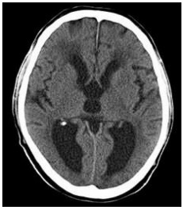
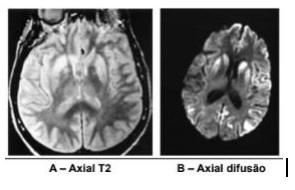
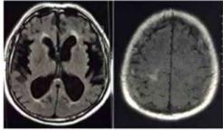
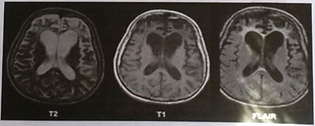

Mulher, 88 anos, em seguimento ambulatorial por demência de Alzheimer, comparece à consulta acompanhada da filha, que relata que a paciente permanece a maior parte do dia sentada ou deitada, comunicando-se com poucas palavras, incontinente (urinária e fecal) e dependente para todas as atividades de vida diária. Essas alterações se instauraram progressivamente no decorrer dos últimos meses. Paciente é incapaz de realizar o mini exame de estado mental. Utiliza donepezila 10 mg/dia e memantina20mg/diaháumano. Emrelação ao manejo dessas medicações, assinale a alternativa correta:
Sobre o diagnóstico das queixas cognitivas em idosos, é correto afirmar que
Homem de 78 anos de idade, em acompanhamento ambulatorial por hipertensão arterial sistêmica, diabetes mellitus tipo 2 e acidente vascular cerebral (AVC) há cinco anos. Relata que nos últimos meses começou a apresentar esquecimentos esporádicos, como deixar a panela em cima do fogão ligado e ter di culdades com cálculos e com atividades que antes desempenhava bem. Tem a percepção de que os sintomas estão piorando gradativamente. O exame físico apresentou apenas hemiparesia discreta em dimídio direito, sem outras alterações. Com base no caso apresentado, assinale a alternativa correta:
Seu Edinaílson, de 60 anos, é trazido para consulta por seus dois lhos: Edberto e Ednardo. Ele vem em cadeira de rodas, mas está com punhos e tornozelos contidos. Segue o relato dos lhos - Papai sempre foi um mecânico de referência aqui no bairro, mas tem dois anos que as coisas desandaram. A gente foi vendo ele car cada vez mais magro e não entendia o que estava acontecendo. Depois, o salário começou a diminuir, mas quando a gente perguntava, ele cava muito irritado. Levamos numa clínica popular, onde ele fez uma bateria de exames para diabetes, pressão, hepatite e até sí lis e HIV, mas nunca deu nada. Ele começou a perder o prazo dos serviços e começou a fazer os serviços pela metade, mas o pior foi que ele começou a destratar todo mundo. Ele sempre foi uma pessoa calma, mas começou a falar palavrão e querer bater nos outros. A gente só foi saber disso depois de um ano, porque ele chegou em casa machucado porque tinha se envolvido em briga. A gente foi na o cina e o dono falou que ele não tinha mais condições de trabalhar. Ele disse que papai começou a urinar no chão do banheiro, que não comia mais e que não se vestia mais direito. Levamos ele para cuidar em casa, mas ele estava muito teimoso e briguento. Não queria comer, não queria tomar banho e não queria se vestir. Estamos levando do jeito que dá, mas quando ele começou a se urinar e se sujar, a gente viu que precisava vir pedir ajuda de novo. Ele não está mais sabendo mexer em dinheiro, não toma mais banho sem ajuda e agora começou a engasgar com a comida. Ele consegue andar e tem força, mas a gente teve que amarrar ele nessa cadeira, porque ele ca querendo pegar nas mulheres, é horrível. Ele lembra da gente, lembra da nossa mãe, lembra dos irmãos, mas a gente não reconhece mais ele. Os lhos trouxeram exames laboratoriais recentes. Não havia alteração endócrino-metabólica significativa, nem hidroeletrolítica ou autoimune. Os exames de rastreamento de ISTs (HIV, sí lis e hepatites) também estavam sem alterações significativas. Ao se aproximar para realizar o exame físico de Seu Edinaílson, ele se mostrava calmo, mas pouco cooperativo. Ele soube dizer o nome completo e reconheceu os lhos. Estava desorientado em espaço. O exame físico não revelou alterações clínicas significantes. Assinale a alternativa com o diagnóstico etiológico mais provável para a síndrome demencial apresentada no quadro
Revisar: possível letra faltando em enunciado
SM, 78 anos, físico, antecedente de HAS e episódio prévio de hemorragia subaracnóidea há 10 anos, informa que há 6 meses vem apresentando alteração de marcha caracterizada por uma base de sustentação alargada, com os artelhos desviados lateralmente, postura ligeiramente etida, aumento do balanço do tronco durante a marcha e diminuição da altura e comprimento dos passos. Há lentidão e hesitação ao iniciar a marcha com os pés parecendo grudados ao chão. Nesse período, também passou a apresentar incontinência urinária. A esposa relata que tem percebido o paciente com dé cit de atenção, alterações de comportamento e de personalidade e disfunção executiva manifestada por diminuição do processamento de informações complexas, e di culdade para manipular novos conhecimentos. O paciente traz exames laboratoriais normais, recentes, incluindo hemograma, eletrólitos, função renal e tireoidiana, enzimas hepáticas, glicemia e hemoglobina glicada, dosagem de vitaminas B12 e ácido fólico, lipidograma, VDRL e anti-HIV. A RM de crânio mostrou atro a global leve e escala de atro a mesial temporal (MTA) de 1; microangiopatia periventricular Fazekas 1, além de aumento dos ventrículos, acompanhado de arredondamento dos cornos frontais e alargamento dos cornos temporais. Assinale, dentre as alternativas abaixo, a hipótese diagnóstica adequada para o caso clínico acima.
Paciente de 69 anos, sexo masculino, médico, previamente hígido, iniciou quadro de tremor de mãos há doze meses, de forma simétrica, associado à bradicinesia e rigidez plástica. Foi iniciada levodopa em dose adequada, com pouca melhora clínica. Nos últimos seis meses, apresenta declínio cognitivo evidente, sendo incapaz de trabalhar. Tem desorientação têmporo-espacial e, com frequência, é visto conversando sozinho. Quando questionado, a rma que há uma criança morando em seu quarto. Na última semana, fez uso de quetiapina para ajudar no sono, com piora importante dos tremores e rigidez de membros superiores. O principal diagnóstico a ser considerado é
Dona Rebeca, 76 anos, é trazida em consulta ambulatorial pela lha, que relata que a mãe se encontra “mais esquecida” há cerca de dois anos. A paciente apresenta di culdade de se lembrar de informações recentes, não consegue mais tomar conta das próprias nanças e, há uma semana, se perdeu no bairro onde mora, após sair sozinha de casa. Mini exame de estado mental realizado na consulta resulta em 15 pontos. Exame físico sem alterações dignas de nota. Quais exames complementares devem ser solicitados antes de se interpretar o quadro como uma demência de causa irreversível?
O Miniexame do Estado Mental (MEEM) é um exame de rastreamento padronizado da função cognitiva. Em relação ao MEEM, analisar os itens abaixo: I. É um dos melhores métodos para documentar o estado mental atual do paciente, particularmente útil para comparar com escores futuros do mesmo exame. II. É o exame indicado para definir diagnóstico em fase inicial de demência. III. É o teste com melhor sensibilidade e especificidade para pacientes analfabetos. Está(ão) CORRETO(S):
A despeito da doença de Alzheimer, tem-se como verdadeiro:
Homem de 80 anos é levado ao consultório por familiares que relatam mudança de comportamento há seis meses, com desinibição social e perda de memória. Não há comorbidades conhecidas ou uso de medicamentos, negam tabagismo e etilismo. O exame físico não apresenta anormalidades. Trazem os seguintes exames: Exames de laboratório: anti-HIV não reator; VDRL não reator; sorologia positiva para T. pallidum; TSH 6,7UI/mL, vitamina B12 256pg/mL. Tomogra a Computadorizada do crânio: sem anormalidades. Considerando esses dados clínicos, assinale a alternativa que apresenta a conduta sequencial MAIS ADEQUADA:
Sobre o diagnóstico das demências é correto afirmar que:
Mulher, 75 anos de idade, chega ao PS acompanhada por familiar devido a alteração de comportamento iniciado há dois dias. Já está em seguimento com o geriatra há 3 anos por di culdade de realizar as atividades domésticas, confundindo o nome de pessoas, com discurso repetitivo e bastante esquecida. Exame físico: inquieta, desatenta durante a consulta e sem déficits motores. O diagnóstico mais provável do quadro de base e do quadro agudo são, respectivamente:
Homem, 80 anos de idade, engenheiro aposentado, procura ambulatório de geriatria por estar cada vez mais esquecido há 2 anos, desde a morte de sua esposa. Apresenta tristeza ocasional quando se lembra da esposa. A lha refere que há 1 ano está morando junto com o paciente pois ele não estava se alimentando bem e estava com di culdade de realizar os afazeres domésticos. Ao exame clínico, apresenta-se repetitivo, com di culdade de terminar frases. Semiologia cardio- pulmonar e abdominal sem alterações. O Miniexame do estado mental é de 24/30 (normal ≥ 28). Assinale a alternativa que relaciona os exames complementares indicados para a investigação deste paciente:
Homem de 72 anos de idade, etilista, veio ao retorno de consulta do ambulatório de geriatria. Tinha queixa de lentidão para andar evoluindo progressivamente ao longo de vários meses com di culdade em coordenar a marcha (inicialmente falta de jeito, às vezes esbarrando nas coisas ou pessoas). Este sintoma piorou gradativamente até não conseguir andar sem um andador ou encostado nas paredes. Começou também a apresentar urgência miccional e, após passar no urologista, não foi detectado nada de anormal em sua próstata ou bexiga. Nessa época sofreu um tombo no banheiro. Foi a partir desse incidente que caram mais evidentes as dificuldades para se lembrar de fatos recentes assim como de encontrar a palavra adequada para se expressar. Trouxe exames laboratoriais normais e a tomografia apresentada. Qual é a hipótese diagnóstica provável?

Analise as seguintes assertivas em relação ao diagnóstico das demências: I. A avaliação da depressão é recomendável, pois frequentemente mascara um quadro demencial. II. A etiologia não é importante, já que os processos demenciais são inexoráveis e progressivos. III. O diagnóstico é essencialmente clínico, mas pode ser dificultado pela presença de múltiplas comorbidades. Quais estão corretas?
Considere o caso clínico abaixo e os personagens nele ilustrados, para responder. Após ser aprovado e ingressar no Programa de Residência Médica em Medicina de Família e Comunidade, você é direcionado para uma Unidade de Atenção Primária à Saúde (UAPS) para ser recebido pelo médico preceptor da Unidade. Em sua primeira participação de reunião de equipe, uma das agentes comunitárias de saúde (ACS) da equipe do médico preceptor traz o relato de uma gestante de sua microárea que não procurou a Unidade de Saúde para começar o pré-natal. A gestante era Vanessa e ela era antiga conhecida da equipe, porque seu nado pai, Seu Odair, fora uma liderança comunitária e era muito querido por todos. Vanessa tinha a primeira consulta de pré-natal agendada para o primeiro horário depois da reunião de equipe. Dr. Marcos Júlio, seu preceptor, relata que Vanessa nunca teve boa relação com os pais e saiu de casa cedo, passando a morar, aos 14 anos, na casa de Ubiratan, seu primeiro parceiro. Após alguns anos morando juntos, Vanessa engravidou e chegou a ser acompanhada pela UAPS no pré-natal, mas teve perda gravídica com aproximadamente 12 semanas de seguimento. Durante esse acompanhamento pré-natal, a equipe cou ciente de que Vanessa vivia em contexto de violência doméstica, mas continuava vivendo com Ubiratan, porque não aceitava voltar para a casa dos pais. Por volta de seus 24 anos, Vanessa teve episódio de hemiplegia desproporcional em dimídio esquerdo, desvio de rima labial e disartria, enquanto trabalhava em uma casa como diarista. Foi levada à urgência e hospitalizada. Durante hospitalização, confirmou-se um infarto cerebral. A família de Vanessa possui histórico de AVCs em idades precoces: Vanusa apresentou episódio de AVC durante uma de suas gestações e dona Benzarina teria apresentado o primeiro AVC antes da menopausa. Segundo a Assistente Social do hospital em que Vanessa cou internada por quase dois meses, Ubiratan nunca teria realizado uma visita, mas Edberto, um ex-namorado, foi companhia assídua. Após a alta hospitalar, Vanessa descobriu que Ubiratan estava vivendo com outra mulher e se mudou para casa de Edberto, que a acolheu, a despeito da não-aceitação do pai de Edberto, Seu Eduardo. Depois de seis anos morando juntos, Vanessa engravidou novamente, mas não procurou a UAPS. A ACS fazia visitas domiciliares na mesma rua em que Edberto e Vanessa moram, quando viu Vanessa, já com barriga gravídica, varrendo a calçada. Após breve conversa, a ACS agenda atendimento para Vanessa na UAPS. Em um turno de demanda programada na Unidade, Vanusa, irmã de Vanessa, traz dona Benzarina para atendimento. A consulta é para mostrar exames solicitados há seis meses. O registro no prontuário traz “si predominância de disfunc de marcha”. A ressonância nuclear magnética de crânio evidencia acometimento extenso de substância branca, no giro do cíngulo, no lobo temporal medial e no tálamo. Assinale a alternativa com o diagnóstico mais provável.
Revisar: possível letra faltando em enunciado
ACR, 82 anos, advogado aposentado, há 6 meses passou a apresentar esquecimento para fatos recentes, tendo passado a esquecer de pagar as contas da casa e teve sua energia cortada pela companhia elétrica. Relata que no m da tarde é comum ver uma criança desconhecida brincando na varanda de sua casa. Relata também sono agitado com muitos pesadelos frequentes. A esposa informa que há dias em que ele está muito apático, cando isolado, sem se comunicar. O exame físico é normal exceto pela presença de rigidez em roda denteada em punho direito. Mini-exame do estado mental (MEEM) foi 25/30. Durante o MEEM respondeu que estava no consultório de seu dentista, lembrou duas das três palavras solicitadas na evocação e errou três cálculos. Os exames laboratoriais são normais, exceto por anemia leve observada no hemograma (Hb = 11g/dl; Ht 38%; VCM 100 ; HCM 31 pg). A dosagem de vitamina B12 foi 259 pg/ml (VR: 239 a 931 pg/ml). A Ressonância magnética de crânio mostrou atrofia global leve e escala de atrofia mesial temporal (MTA) de 1. Qual a principal hipótese diagnóstica para o caso clínico?
Mulher, 72 anos, previamente hígida, professora, vem à consulta trazendo exames acompanhada do lho. Este refere que a paciente permanece apresentando ""esquecimentos"" progressivos, de início há 4 meses, associado à di culdade de abstração, anedonia, desânimo, julgamentos empobrecidos e, por vezes, alucinações visuais. Observam-se estado de consciência, vigília e atenção normais, choro frequente, ideias de desvalia, desorientação seletiva, além de memória recente e remota comprometidas. Miniexame do estado mental: 16 pontos. Demais dados do exame físico e exames complementares dentro da normalidade. Em relação ao caso clínico, qual é o diagnóstico?
Com relação à demência de Alzheimer é correto afirmar que:
Mulher de 83 anos apresenta perda de memória recente e desorientação temporal e espacial. Os sintomas iniciaram há cerca de 5 anos e apresentaram piora lenta e progressiva. A senhora perdeu-se no bairro que morava há mais de 40 anos quando saiu para ir à padaria. Não consegue fazer as compras e se esquece de tomar os seus medicamentos de uso diário. É portadora de hipertensão arterial sistêmica e de diabetes mellitus tipo II, com controle adequado. Teve sí lis secundária há 30 anos, tratada adequadamente com penicilina e o último VDRL era de 1:4. O exame físico não apresenta anormalidades. A TC do crânio revela atro a cerebral difusa compatível com a idade e microangiopatia periventricular (leucoaralose). Exames de laboratório: VDRL 1:2; anti-HIV NR; TSH: 6,1µUI/mL (VR: 0,48 5,6µUI/mL); T4 livre: 1,42ng/dL (VR: 0,89-1,76ng/dL); Vitamina B12: 456pg/mL (VR: 200 a 900pg/mL). Assinale a alternativa que apresenta o diagnóstico MAIS PROVÁVEL para essa paciente:
A manutenção da função é uma meta fundamental dos cuidados geriátricos e um elemento importante do envelhecimento bem sucedido. Assim como outras síndromes geriátricas, o declínio funcional é multifatorial; fatores médicos, psicológicos, sociais e ambientais podem contribuir para o comprometimento do estado funcional. As informações sobre o estado funcional são importantes para o planejamento e monitorização das respostas à terapia e para determinação do prognóstico. A funcionalidade global é o ponto de partida de qualquer avaliação e deve ser abrangente, contemplando a coleta de informações sobre Atividades de Vida Diária: Básicas, Instrumentais e Avançadas. Sobre funcionalidade: I. A primeira a ser perdida é a atividade de Vida Diária BÁSICA. II. Banho, vestir-se, higiene pessoal, transferência, continência, alimentação fazem parte de atividades BÁSICAS de Vida Diária. III. Fazer compras no mercado, faxinar a casa, preparar a comida, organizar as nanças no lar e saber os horários das medicações fazem parte de atividades INSTRUMENTAIS da vida diária. IV. Atividades ocupacionais, atividades sociais, participação na comunidade, atividades recreativas, direção veicular, desempenho de papéis na família como, por exemplo, cuidador fazem parte das atividades AVANÇADAS da vida diária.
O MINIMENTAL (Miniexame do Estado Mental) é utilizado comumente na consulta médica em Atenção Primária à Saúde, e tem por excelência, EXCETO:
A presença do idoso na atenção primária está cada vez mais prevalente, como reflexo do aumento da expectativa de vida de toda população brasileira. o médico de mfc, por isso, necessita cada vez mais de conhecimentos sobre essa faixa etária. O diagnóstico provável de doença de alzheimer inclui, EXCETO:
A respeito das demências secundárias, ou aquelas que têm lesão estrutural do sistema nervoso central, assinale a alternativa correta.
São exames de rastreio de síndrome demencial, EXCETO,
Homem, 74 anos, professor aposentado, comparece à consulta médica acompanhado do lho, queixando-se de esquecimento progressivo há um ano. Relata que tem se esquecido de dar recados, pagar contas e senhas dos cartões de crédito. Há uma semana se perdeu na rua quando foi pegar a neta na escola. Exame físico: bom estado geral, consciente e orientado no tempo e no espaço; neurológico: sem alterações; mini-exame do estado mental: 24/30; aparelhos cardiovascular e respiratório: normal. Exames laboratoriais: TSH = 2,9 174,0-878,0); VDRL não reagente; anti-HIV não reagente; hemograma, função renal, eletrólitos e transaminases normais. Realizada tomogra a de crânio sem contraste que evidenciou redução difusa do volume encefálico, proporcional para a faixa etária. Assinale a alternativa que apresenta o diagnóstico mais provável.
Homem de 78 anos de idade é avaliado para quadro recente de di culdade com a memória. Ele tem hipertensão tratada com hidroclorotiazida e relata diminuição do apetite, problemas em adormecer e afastamento das atividades sociais, desde a morte de sua esposa, há 13 meses, ocasião em que ele teve que assumir várias novas responsabilidades, incluindo a gestão das nanças e cozinhar. Perdeu 5 kg de peso nesse período. Ele está preocupado porque tem esquecido de pagar algumas contas. Sinais vitais, exame físico e neurológico: normais; Miniexame do Estado Mental: 28/30 (normal: ≥ 24); versão reduzida da Escala de Depressão Geriátrica: 9 (normal: < 6). Exames laboratoriais, incluindo hemograma, vitamina B12 e per l de tireoide: normais. Nesse momento, a conduta correta é
Mulher de 72 anos é levada a consulta pelo marido devido a ""esquecimento frequente"". O quadro se iniciou há 1 ano e vem evoluindo de forma progressiva com esquecimento de eventos recentes e cotidianos, tais como quais foram as refeições feitas no dia. A memória está preservada para fatos de sua juventude. Neste período, tem cado mais restrita em casa, saindo menos e apresentou um episódio de queda da própria altura. Está parcialmente dependente para atividades instrumentais, e independente para atividades básicas. Sem alterações de humor. Sem dados patológicos pregressos relevantes. Exame físico sem alterações. Mini-exame do estado mental: 17 pontos (em um total de 30 pontos avaliados). Sobre a investigação do quadro acima descrito, é CORRETO afirmar:
Revisar: possível letra faltando em enunciado
FAS, 68 anos, sexo feminino, procura atendimento na UBS, por apresentar alterações de memória nos últimos meses, às vezes se confunde ao voltar para casa quando vai ao mercado. De acordo com o contexto, podemos a rmar que o Alzheimer pode se apresentar:
L. A.O de 69 anos é trazido ao consultório com queixas de memória recente diminuída há 6 meses, com agnosia, apraxia, diminuição da atenção. Tem tido agitação psicomotora, principalmente no período noturno. Diante do quadro clínico, poderemos afirmar:
Qual a causa mais comum de demência?
Homem, 82 anos. A esposa relata que o paciente, há dois anos, vem apresentando distúrbio de atenção e alucinações visuais bem detalhadas, episódios de esquecimento, especialmente para informações recentes, chegando a se perder em trajeto usual. Ao exame físico observa se bradicinesia, tremores de extremidades e rigidez muscular. Qual é o diagnóstico mais provável?
A história clínica, relatada pelo paciente ou por familiares, e o exame físico são fundamentais no diagnóstico diferencial dos quadros demenciais. Na maioria dos casos a descrição da evolução do quadro clínico é o principal determinante do diagnóstico nal, podendo, inclusive, ser dado de forma retrospectiva. Quanto ao diagnóstico diferencial das demências, analise o caso clínico a seguir: Homem, 72 anos, há 2 anos iniciou com episódios de confusão mental, incluindo episódios nos quais se perdeu em via pública. Inicialmente os episódios foram atribuídos a um quadro depressivo, pois o senhor apresentava irritabilidade e desinteresse nas atividades previamente prazerosas. No decorrer do tempo cessou as atividades fora do domicílio e tem necessitado cada vez mais da assistência de familiares para a realização de atividades cotidianas. Tem apresentado alucinações visuais, relata ver insetos nas paredes e pessoas desconhecidas em seu quarto. Apresentou 4 quedas no período de 1 ano e seus familiares observam que seus movimentos estão cada vez mais lentos, como se o seu corpo estivesse “congelado”. Qual a principal hipótese diagnóstica?
Homem, 82 anos, é levado à consulta por seus lhos por apresentar esquecimentos, confusões de nomes e datas e até de locais onde está. O clínico conversa com a família e diz que o paciente começa a apresentar sinais de demência. Pode-se afirmar que a causa mais frequente de demência no idoso é a doença:
Homem, 54 anos, comparece ao ambulatório de Neurologia em cadeira de rodas. Estava assintomático até 6 meses atrás, quando começou a evoluir progressivamente com: mudança de humor; esquecimento e crise convulsiva (mioclonias). Ressonância nuclear magnética (RNM): em air, hiperintensidade em tálamo e núcleos da base. A hipótese diagnóstica mais provável para este paciente é:
Médico de 57 anos de idade veio trazido pela esposa à unidade básica de saúde por alteração do comportamento há dois anos. Antes disso era uma pessoa funcional, e não tinha doenças prévias diagnosticadas. O quadro iniciou com irritabilidade e impulsividade, às vezes parecendo que tinha “perdido o freio mental”, falando o que “vinha na cabeça”. Também passou a comer muito doce, algo que não era comum. Durante toda a consulta, o paciente demonstrava-se inquieto, e às vezes fazia comentários jocosos. Na avaliação cognitiva, apresentava respostas impulsivas e estava um pouco desatento. No mini exame do estado mental, ele fez 26 pontos (perdeu três pontos nas subtrações seriadas e um no comando verbal). O exame clínico não tem outras alterações. Qual é a hipótese diagnóstica mais provável?
NÃO é causa potencialmente reversível de demência:
Homem, 82 anos, é levado à consulta por seus lhos por apresentar esquecimentos, confusões de nomes e datas e até de locais onde está. O clínico conversa com a família e diz que o paciente começa a apresentar sinais de demência. Pode-se afirmar que a causa mais frequente de demência no idoso é a doença:
Homem, 54 anos, comparece ao ambulatório de Neurologia em cadeira de rodas. Estava assintomático até 6 meses atrás, quando começou a evoluir progressivamente com: mudança de humor; esquecimento e crise convulsiva (mioclonias). Ressonância nuclear magnética (RNM): em A hipótese diagnóstica mais provável para este paciente é:
Um paciente de 45 anos procura seu consultório para orientações, ele está com medo pois seu avô foi diagnosticado recentemente com Alzheimer. Sobre os fatores de risco para essa condição, assinale a alternativa CORRETA:
A avaliação de demência deve começar com uma história detalhada do início do problema, obtida com o paciente, familiares ou cuidadores. A esse respeito, assinale a assertiva correta.
Qual das medicações está mais indicada para o tratamento específico da demência na doença de Alzheimer em um paciente com classificação Clinical Dementia Rating – CDR 2?
Homem, 75 anos, professor universitário aposentado. Veio na consulta acompanhado do lho, queixando-se de esquecimento progressivo há um ano. Esquece de dar recados, pagar contas e senhas dos cartões de crédito e se perdeu na rua há uma semana quando foi pegar a neta na escola. Exame físico: BEG, consciente e orientado no tempo e no espaço. Neurológico: sem alterações. Mini-exame do estado mental: 29/30. Escala de depressão geriátrica: 2/15. Exames laboratoriais: TSH = 2,5 µIU/mL (VN: 0,4-4,5); vitamina B12 = 756 pg/mL (VN: 174,0-878,0), VDRL não reagente, anti-HIV não reagente. Hemograma, função renal, eletrólitos e transaminases normais. Tomogra a de crânio: redução difusa do volume encefálico, proporcionada para a faixa etária. Qual é o diagnóstico mais provável?
O tratamento da Doença de Alzheimer - DA deve ser multidisciplinar, contemplando os diversos sinais e sintomas da doença e suas peculiaridades de condutas. Somente sendo errado o item:
O processo de investigação diagnóstica de Doença de Alzheimer para preencher os critérios inclui história completa (com paciente e familiar ou cuidador), avaliação clínica – incluindo a escala de avaliação clínica da demência, somente sendo errado, nesse contexto, o item:
Qual das seguintes alternativas seria o indicador mais específico e sensível de que a doença cerebrovascular era a causa do comprometimento cognitivo do paciente?
MiniExame do Estado Mental e Outros Testes de Rastreio O médico de família, ao atender seu Joaquim, de 82 anos, que foi levado por sua cuidadora com relato de ""muito esquecimento"" que para ela era Alzheimer, solicitou uma Ressonância do cérebro, um exame de sangue e o encaminhou para o neurologista. Com base nesta história assinale a alternativa correta:
Seu Carlos, 76 anos, hipertenso e diabético vem apresentando a um ano ""lapsos de memória"", mudança de comportamento, alteração do sono, certa agressividade e está muito repetitivo segundo sua esposa que também é sua cuidadora. Ao exame físico nada de relevante foi encontrado, porém ao realizar o teste do mineexame mental seu escore foi de 15 pontos. Durante a consulta sua esposa mostrou um exame de ressonância cerebral que mostrava uma atro a de hipocampo. Seu Carlos não se queixava de problemas de memória e até ria quando era perguntado sobre este assunto. Com base no relato acima, marque a alternativa correta:
Todas as medicações abaixo apresentam-se potencialmente e cazes para o tratamento da Doença de Alzheimer, EXCETO:
Com o aumento do envelhecimento populacional e da expectativa de vida, a demência faz parte do grupo das mais importantes doenças que acarretam declínio funcional progressivo e perda gradual da autonomia e da independência entre os idosos. Sobre a Doença de Alzheimer, a mais prevalente entre as diversas causas de demências, é INCORRETO afirmar:
O comprometimento cognitivo leve:
Para diagnostico de demência vascular, são necessários:
Um paciente de 75 anos vem há três meses com declínio cognitivo, incontinência urinária e di culdade de marcha, caracterizada por passos curtos e lentos, instabilidade postural principalmente ao virar o corpo que o levou a sofrer várias quedas. Qual o diagnóstico mais provável?
As mudanças estruturais doença de Alzheimer DA incluem os enovelados neuro brilares, as placas neuríticas e as alterações do metabolismo amiloide, bem como as perdas sinápticas e a morte neuronal. Somente está incorreto o item:
Mulher, 82 anos de idade, chega em consulta com a filha com queixa de esquecimento e sensação de mal- estar. Deixou de frequentar o clube dos idosos, prefere car em casa e perdeu o prazer nas atividades habituais. Nega tristeza e tem bom apetite. Refere uma certa irritação porque perde objetos. Não acorda descansada pela manhã. Aparenta estar distraída durante a consulta. Qual é o instrumento que melhor auxilia no diagnóstico deste caso?
Homem de 75 anos, com antecedentes de ressecção gástrica há 20 anos e, desde então, não come carne, iniciou há meses com parestesias e fraqueza em membros inferiores até proximalmente. Em consultas sucessivas, não apresentou anomalidades, mas, na ultima bateria de exames séricos, há uma semana, foi verificada hiperglicemia de 130mg%. Seu exame médico revela ataxia da marcha, paraparesia, hipopalestesia, em mebros inferiores, hiporre exia, hipotonia e reflexo cutânio plantar indiferente. Qual é o diagnóstico mais provável?
O diagnóstico de hidrocefalia de pressão normal é improvável quando o paciente apresenta
Mulher de 65 anos, que mora só e é hipertensa, comparece à consulta médica acompanhada por sua sobrinha que refere que a paciente sempre acumulou coisas no dia a dia, mas há cerca de 2 anos piorou e não permite que jogue fora qualquer objeto, mesmos os quebrados, nem que limpem sua casa. Tem incontinência urinária e sua cama e os tapetes da casa cheiram à urina. Apresenta isolamento social. Exame físico: despenteada, em precário estado de higiene. PA 180/100 mmHg. Testes cognitivos: preservação relativa de memória e dos domínios visuoespaciais, comprometimento da função executiva e comportamentos compulsivos. A etiológica mais provável é
Homem, 72 anos, é atendido no ambulatório de clínica médica. De acordo com o relatado por sua esposa, este paciente vem apresentando alucinações visuais e vigília utuante. No mês anterior, apresentou episódio de intensa “agitação”, sendo prescrito risperidona. Após o início desta medicação houve acentuada piora motora e quatro episódios de queda da própria altura, não sugestivas de síncope. Na avaliação clínica, há sinais de parkinsonismo e alteração cognitiva. Ausência de disartria e afasia. Entre as doenças abaixo, a mais provável é:
Homem de 72 anos, é levado por seus familiares ao ambulatório de neurologia com quadro de comprometimento cognitivo executivo e da memória há 6 meses, há 30 dias apresentou instabilidade de marcha com passos curtos e andar característico "magnético" com rotação externa do quadril. Seu provável diagnóstico é de:
Uma senhora, de 68 anos, comparece no consultório desacompanhada, referindo amnésia episódica, perda de compromissos importantes. Ela responde a todas as solicitações com respostas do tipo "não sei", inclusive quando perguntada sobre seu estado mental e saúde em geral. Quando foi avaliada, referiu incapacidade em realizar alguns testes do miniexame do estado mental. Ela admite disforia. O médico avaliador suspeitará do seguinte diagnóstico como primeira hipótese para o quadro:
Qual(is) dado(s) epidemiológico(s) das doenças neuropsiquiátricas no Brasil é verdadeira?
Paciente do sexo masculino, 50 anos, com quadro de apraxia de marcha, incontinência urinária e confusão mental, sugere:
Mulher leva seu marido de 60 anos ao ambulatório devido à perda progressiva da memória, de evolução há dois anos. Existe interferência nas atividades de vida diárias, como esquecer nome dos lhos, mas ele não erra nas contas e não tem di culdade de escrita. A apatia é um achado importante, além do hábito de andar sem roupa dentro de casa e procurar a mulher com mais frêquencia, querendo manter relações sexuais. O apetite melhorou e procura comida com muita frequência. Na consulta, o Mini Mental = 22, (escolaridade de nível superior), não havia alterações motoras ou sensitivas ao exame físico e os pares cranianos estavam normais. Nesse caso, o diagnóstico mais provável deve ser de demência:
Assinale V para as afirmativas Verdadeiras e F para as Falsas. ( ) Nas fases iniciais da demência, particular atenção deve ser dada às atividades instrumentais cotidianas, como gerenciamento das finanças, uso de aparelhos eletrodomésticos, ato de cozinhar, entre outras. ( ) O diagnóstico de síndrome demencial é eminentemente clínico, baseado em avaliação objetiva do desempenho cognitivo e funcional. A identi cação da causa de demência, por sua vez, depende de investigação complementar, constituída por exames laboratoriais e de neuroimagem estrutural. ( ) Frequentemente mutações genéticas específicas estão associadas ao desenvolvimento das demências. ( ) O uso de determinadas substâncias, a depressão, as anormalidades metabólicas, incluindo doenças tireoidianas, a de ciência da vitamina B12, os distúrbios no metabolismo do cálcio, a insu ciência hepática, a hidrocefalia de pressão normal, o hematoma subdural e as neoplasias são exemplos de transtornos classificados como demências potencialmente reversíveis. ( ) Considerando que o diagnóstico de demência pode ser baseado exclusivamente no resultado do Mini Exame do Estado Mental - MEEM, é aconselhável a realização rotineira desse teste na população idosa. A sequência correta é:
Def iciência de Vitamina B12 e Ácido Fólico Izabel, 50 anos, com histórico prévio de cirurgia bariátrica (restritiva-disabsortiva) há 10 anos, sem seguimento regular. Encaminhada ao Pronto Socorro do Hospital Cajuru por anemia, com Hb de 6,5 g por dL e volume corpuscular médio de 120 . Além disso apresentava diminuição da série branca (2500 leucócitos por mm3) e das plaquetas (45.000 por mm3). Sorologias realizadas na admissão, incluindo pesquisa de HIV, negativas. Quadro recente relatado pelos familiares de piora cognitiva progressiva e desequilíbrio. Recebeu diagnóstico de Demência de Alzheimer há cerca de duas semanas, após avaliação em Unidade de Emergência, tendo iniciado Memantina, com pouca resposta. De acordo com o caso clínico, a alteração observada no esfregaço do hemograma que poderia colaborar para o diagnóstico é a presença de:
Alterações do desempenho cognitivo podem ser observadas como consequência de uma grande variedade de condições e em qualquer faixa etária; no entanto, as habilidades cognitivas são muito mais susceptíveis a transtornos durante a velhice. Nesse sentido a alternativa correta, é:
Filha leva sua mãe ao neurologista preocupada com sua perda de memória e di culdade para atividades de vida diária. Segundo ela, sua mãe de 78 anos, mora sozinha desde que cou viúva há 5 anos. É uma senhora ativa e sem comorbidades. Na época cou depressiva mas não realizou nenhum tratamento. Há mais ou menos dois anos começou a ter di culdade para lembrar de compromissos. Há mais ou menos um ano, a lha veio visitá-la no Natal e percebeu que sua memória havia piorado contratando uma cuidadora período integral. A paciente refere que está bem e não entende o motivo pelo qual a filha insistiu para que fosse realizada a consulta. Caso você fosse o (a) neurologista, o que faria neste primeiro momento?
Paciente geriátrica, cursa com exantema pigmentado em áreas de exposição solar, progredindo com episódios de diarreia, desorientação. Assinale a vitamina cuja deficiência pode estar gerando o quadro clínico referido.
Leia o caso clínico a seguir. Um paciente de 52 anos, representante de vendas no interior de Goiás, procurou o serviço médico na Unidade Básica de Saúde relatando di culdade para andar e para realizar atividades manuais devido a desequilíbrio e tremor, iniciados há uma semana de forma progressiva. Sua esposa relatou que ele estava mais irritado, impulsivo, às vezes confuso, com di culdade para realizar suas atividades habituais há cerca de um mês, mas o paciente atribui essas di culdades à redução da acuidade visual, que se associava à visão distorcida e desalinhada dos objetos, ou mesmo a alucinações visuais que o incomodavam há vários meses. Ele foi encaminhado para investigação em hospital terciário e foi consultado após seis semanas de espera. Nesta ocasião, apresentava piora dos sintomas com ataxia axial e apendicular, abalos musculares súbitos ao estímulo sonoro, confusão mental, perda de memória, leve disfagia e disfonia, com liberação piramidal difusa e nuca livre. A esposa relatava que ele não tinha nenhuma doença prévia conhecida, nunca fumara, bebia socialmente e não teve febre no período. Foi realizada uma ressonância magnética cerebral, conforme guras a seguir. Conforme a principal hipótese diagnóstica aplicada ao caso, o exame a ser solicitado é:

Paciente de 82 anos, viúva, analfabeta, teve visita domiciliar requisitada pelos lhos. A paciente morava no interior do estado e, há 2 semanas, foi trazida para a casa de um dos lhos, na capital. Está agitada à noite, ca rezando alto, não consegue dormir, apresenta di culdade de deambular e "vem perdendo urina". Os lhos dizem que ela não era assim, mas não sabem precisar o início dos sintomas. Não faz uso de medicamentos, nega tosse e dispneia. Atividades de vida diária básicas comprometidas. Escala de depressão geriátrica = 3, mini exame do estado mental = 15 pontos. Nega alucinações visuais ou auditivas. Ao exame físico, apresenta marcha de base alargada e passos curtos. Movimentação passiva das articulações sem resistência. Considerando a hipótese diagnóstica mais provável, qual a conduta inicial mais adequada para esta paciente?
Paciente A.B.S., 75 anos, sexo feminino, foi à consulta médica acompanhada da lha primogênita, que relata que a mãe iniciou quadro de esquecimento há 2 anos, principalmente para acontecimentos recentes. O quadro foi piorando de forma progressiva e, no momento, apresenta incapacidade de executar as atividades diárias, realizadas previamente. Após avaliação clínica, o médico suspeitou de um quadro de demência. Dadas as a rmativas em relação ao diagnóstico diferencial das demências, I. A hidrocefalia comunicante normobárica é uma causa de demência não tratável. II. A principal hipótese diagnóstica para o quadro clínico descrito acima é a doença de Pick. III. A doença de Alzheimer é a causa mais comum de demência e ocorre em mais de 50% dos casos. IV. Deve ser solicitado inicialmente TSH, T4L, VDRL, dosagem sérica de vitamina B12 e TC de crânio, para exclusão de causas tratáveis. Verifica-se que está(ão) correta(s)
Uma pessoa com dé cit de memória indicado por testes, funções cognitivas gerais preservadas e atividades da vida diária intactas procura atendimento no CSC. Não há evidências de depressão. Qual seria o tratamento de escolha nesse caso?
Qual estrutura abaixo é acometida primeiramente na Doença de Alzheimer?
Paciente portador da doença de Alzheimer apresenta piora cognitiva súbita, caracterizada por sonolência excessiva, alucinações visuais e auditivas. Qual das condutas abaixo é a mais adequada nesta situação?
A.M.S., mulher 63 anos, é admitida na emergência com quadro de desorientação de início há 3 dias, caráter utuante e sonolência há pouco mais de 24 horas. Ao exame físico: PA = 100 x 50 mmHg; FC = 62 bpm; FR = 18 irpm; ACV RCR 2T; AR: MVUA com estertores crepitantes em ambas as bases; abdome ácido, indolor, peristáltico, sem visceromegalias palpáveis; MMII com edema frio com cacifo 1+/4+ bilateralmente em porção distal. Exame neurológico: MEEM = 17, pares cranianos sem alterações, reflexos tendíneos presentes e simétricos universalmente, desatenção e pensamento desorganizado. HPP: doença de Parkinson há 18 meses, HAS com controle medicamentoso. A respeito do caso, analise as assertivas a seguir: I - Condições como insu ciência cardíaca, hipóxia, hipercapnia, alterações tireoidianas, infecções, insu ciência renal e insuficiência hepática devem ser corrigidas, a fim de melhorar o funcionamento cerebral visto tratar-se de delirium. II - Doença de Alzheimer é a principal hipótese devido ao processo degenerativo com acometimento inicial do hipocampo caracterizado por alterações cognitivas/comportamentais e preservação motora/sensorial nas fases avançadas. III - Redução dopaminérgica da doença de Parkinson também pode comprometer a atenção, as principais características são lentificação cognitiva, apatia, comprometimento da memória e das funções executivas desde o início da doença. IV - Devido à redução da mobilidade da caixa torácica, elasticidade pulmonar, pressão ins e expiratória máximas, consequente ineficiência de tosse e mobilidade dos cílios do epitélio respiratório, facilita quadro de pneumonia. Estão CORRETAS as assertivas.
Homem de 72 anos apresenta di culdade de marcha há um ano, incontinência urinária e esquecimentos (perde-se em casa, não se recorda onde guardou objetos, esquece compromissos, deixa fogão aceso) há nove meses. AP: HAS e DM. Miniexame do estado mental com pontuação de 20/30. A ressonância magnética do encéfalo é apresentada a seguir. O diagnóstico do paciente é

Considerando a definição do DSM-V para demências, como a diminuição adquirida, persistente e significativa em pelo menos um dos seis grandes domínios cognitivos, assinale o item que não representa especificamente um desses domínios:
Mulher, 86 anos, há 6 meses perdeu-se no trajeto da igreja para a sua casa e vem apresentando esquecimento de evolução insidiosa. Não está reconhecendo os sobrinhos e não se lembra do nome das amigas com quem fazia aulas de pintura e por isso tem deixado de frequentá-las. Não apresenta alteração do ciclo sono-vigília, do humor e do apetite. Qual é a substância envolvida na fisiopatologia do diagnóstico mais provável?
Homem, 75 anos, foi trazido à consulta por sua esposa e lhos com história progressiva de alteração da memória, secundária em especial a dé cit de atenção, embora ultimamente a perda de memória tenha-se acentuado. Além disso, o paciente tem apresentado utuação cognitiva da atenção e alucinações visuais, associadas a episódios de perda de consiciência e de quedas. Ao exame físico, o paciente apresenta sinal da roda denteada positivo (D > E) e discreta bradicinesia. De acordo com os achados clínicos, qual é o diagnóstico mais provável?
Paciente com histórico de distúrbios cognitivos, com de ciências mais acentuadas nas funções visuoespaciais e executivas, começa a desenvolver sintomas extrapiramidais. Assinale o diagnóstico mais provável:
Paciente com 78 anos apresentando demência, alucinações visuais precoces, parkinsonismo, tendência frágil ao delírio e distúrbio do sono REM. Qual é o provável diagnóstico:
A pelagra é uma doença carencial causada pela deficiência da
Sobre Demência do tipo Alzheimer, assinale a resposta correta:
Dona Genina tem 69 anos e vem apresentando quadro de esquecimento progressivo importante nos últimos 8 meses. Atualmente a lha a rma que a paciente se perde na casa, e já chegou a colocar o ferro de passar roupa na geladeira e a dormir na casa do vizinho por se confundir com a própria casa. A paciente tem ensino superior completo e apresenta um mini-mental de 15 pontos. Para esta paciente, a melhor conduta é:
Sobre as doenças demenciais, assinale a alternativa errada:
São causas de demência, exceto:
Todos abaixo são fatores de risco modificáveis para demência e comprometimento cognitivo leve, EXCETO:
Homem, 78 anos de idade, com confusão mental e alteração da memória há 6 meses. Apresenta períodos de lucidez que duram alguns dias, com episódios de desorientação de início agudo. Nos últimos 3 meses teve alucinações visuais bem estruturadas (chega a ver animais na árvore). Teve algumas quedas, com fratura do punho. Ao exame físico: leve tremor na mão esquerda e rigidez nos braços. Há 3 semanas passou em consulta recebendo haloperidol e evoluiu com rebaixamento da consciência e internação. Qual é o diagnóstico provável?
Estudos de genética molecular permitiram identi car os genes consistentemente associados com o maior risco de desenvolvimento da doença de Alzheimer. Qual das alternativas abaixo não está relacionada à doença de Alzheimer?
São marcadores neuropatológicos da doença de Alzheimer:
Faça a correlação entre a situação clínica e a conduta recomendada. Situação clínica: pacientes idosos, com quadro de deficit cognitivo. 1. Primeiro paciente: evolução de 1 ano, apresentando Atividades de Vida Diárias (AVDs) anormais e exame de mini exame do estado mental (mini-mental) 12, para escolaridade de 8 anos. HPP: sem doenças prévias e em uso de Ginkgo biloba há 3 meses, indicado por um médico do serviço básico de saúde. Exames laboratoriais e TC de crânio normais; 2. Segundo paciente: evolução de 9 meses, apresentando AVDs anormais e exame de mini-mental 28, para escolaridade de 8 anos. Apresenta-se com labilidade emocional e anedonia. Exames laboratoriais e TC de crânio normais; 3. Terceiro paciente: evolução de 10 dias, com de cit de atenção, desorientação importante, alteração do ciclo sono vigília. AVDs anormais. Foi impossível aplicar o mini-mental devido ao de cit de atenção. Exames laboratoriais: hemograma: Hb = 14; VCM = 87; leucócitos = 12.000; plaquetas = 250.000; urina tipo1 pH = 7.0; densidade = 1026; leucócitos = 500.000; hemácias = 15.000; bacteriúria intensa; 4. Quarto paciente: evolução de 9 meses, após uso de benzodiazepínico devido à insônia, apresentando AVDs normais e mini-mental 26, para escolaridade de 8 anos. Exames laboratoriais e TC de crânio normais. Condutas recomendadas: a. Suspender o medicamento em uso, devido ao deficit cognitivo; b. Tratar especificamente a causa desencadeante, por se tratar de um quadro de delirium; c. Iniciar com anticolinesterásico, devido ao quadro sugestivo de Alzheimer; d. Iniciar o tratamento com citalopram, devido ao quadro sugestivo de depressão. Assinale a alternativa que apresenta as correlações CORRETAS:
Homem, 70 anos, engenheiro, foi trazido ao consultório pelo lho que relatou que o pai sempre foi muito discreto e polido. Há seis meses, em reunião familiar, observou que o pai estava agitado, gritando e gesticulando muito, inclusive com gestos obscenos. Há 2 meses, ao visitar o pai, este estava nu. O paciente vem apresentando di culdades para realizar cálculos simples e, por isso, deixou de trabalhar. Não usa medicamentos e não tem relato de doenças psiquiátricas prévias. Exame físico normal. Ressonância magnética de encéfalo: Qual é o diagnóstico mais provável?

Paciente de 68 anos, sexo feminino, apresenta história de 5 meses de incontinência urinária, distúrbios da marcha e perda de memória. Qual o diagnóstico mais provável?
A verificação de funcionalidade das atividades básicas da vida diária constitui o ponto de partida da Avaliação Multidimensional do Idoso. Que componente, dentre os abaixo, não é considerado uma atividade básica de vida diária?
Paciente com história de 6 meses de evolução com comprometimento cognitivo executivo e da memória associado ao início recente de instabilidade de marcha com passos curtos e andar característico "magnético" com rotação externa do quadril. Seu provável diagnóstico é de
Aproximadamente 10% das pessoas com mais de 70 anos apresentam perda significativa de memória e em mais de 50%, a causa é a doença de Alzheimer. Sobre essa doença, informe se é verdadeiro (V) ou falso (F) o que se a rma abaixo. A seguir, assinale a alternativa que apresenta a sequência CORRETA. ( ) As alterações cognitivas da doença de Alzheimer tendem a seguir um padrão típico, começando com de ciência de memória e expandindo-se para deficits visuoespaciais e da linguagem.; ( ) A ênfase no tratamento é na melhora a longo prazo dos problemas comportamentais e neurológicos associados, bem como no fornecimento de suporte ao cuidador.; ( ) Os exames de neuroimagem, como tomogra a computadorizada e ressonância magnética, detectam um padrão único específico da doença e sempre se encontram alterados no início de sua evolução.
Um homem de 79 anos de idade apresenta desorientação e perda da memória progressivas há 4 semanas. Ele tem história de demência leve, mas vinha vivendo de forma independente. Familiares relatam que o quadro demencial era estável nos últimos dois anos até esta piora recente. Ele realizou tomogra a de cabeça e pescoço, eletroencefalograma e punção liquórica sem que se chegasse a um diagnóstico. Na segunda semana de internação seu estado mental piorou ainda mais, inclusive com o aparecimento de mioclonia no braço direito. Qual o diagnóstico?
A depressão e a demência são comuns entre os idosos, aparecendo em conjunto ou com uma pequena distância temporal, devendo ser realizada investigação clínica para detectar causas possíveis de tratamento. Assinale a opção que apresenta causas reversíveis de demência:
Paciente masculino, 78 anos, comparece ao consultório do geriatra acompanhado pela lha. Tem diagnósticos prévios de hipertensão arterial sistêmica, diabetes mellitus tipo II não insulina dependente e histórico de tabagismo, tendo cessado há cerca de 10 anos com carga tabágica total de 55 maços/ano. Está em uso de losartan 50 mg a cada 12 horas, hidroclorotiazada 25 mg ao dia, AAS 100 mg ao dia, metformina 500 mg pós almoço e jantar e gliclazida 30 mg em jejum. Filha relata que o paciente vem apresentando esquecimentos, mas não sabe precisar início da queixa. Há alguns meses tem apresentado maior irritabilidade, ca desorientado em locais desconhecidos e perambula pela casa no período noturno. Familiares observam que está mais lento para a realização de tarefas como vestuário e alimentação, necessitando de supervisão e por vezes assistência. Há 2 meses apresentou queda de mesmo nível em domicílio, sem traumatismos associados. O paciente traz como queixa principal para a consulta o uso de muitos comprimidos ao dia. Avaliação clínica e laboratorial inicial mostrou: pontuação no mini exame do estado mental 21 (ensino fundamental completo), hemoglobina 13,2 g/dl, creatinina 1,23 mg/dl, TSH 4,75 mU/L, vitamina B12 486 pg/ml, TGO 35 U/L, TGP 27 U/L, VDRL não reagente, sorologia para HIV não reagente, tomogra a computadorizada de crânio com presença de alteração de substância branca sugestiva de microangiopatia e redução volumétrica encefálica compatível com idade. Qual o diagnóstico mais provável? Respostas: 1 12 23 34 45 56 67 78 89 100